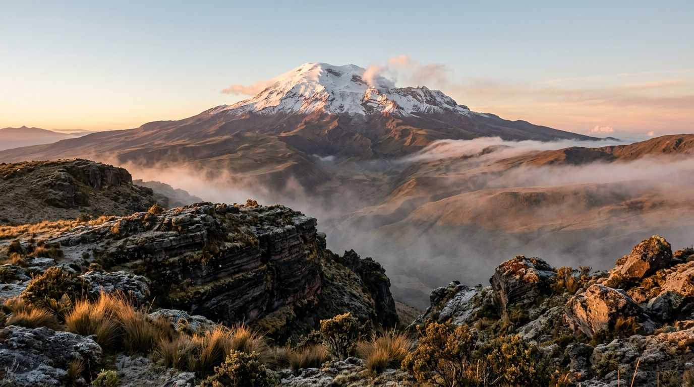
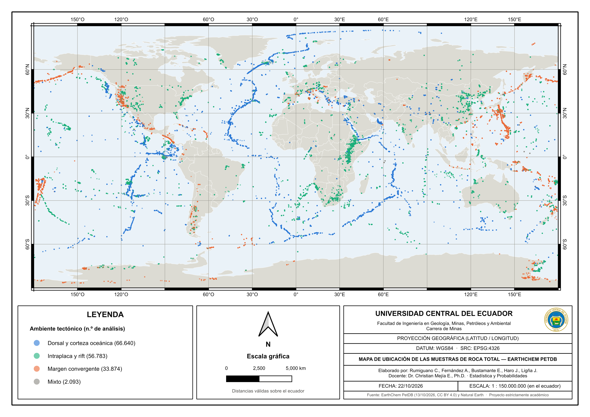
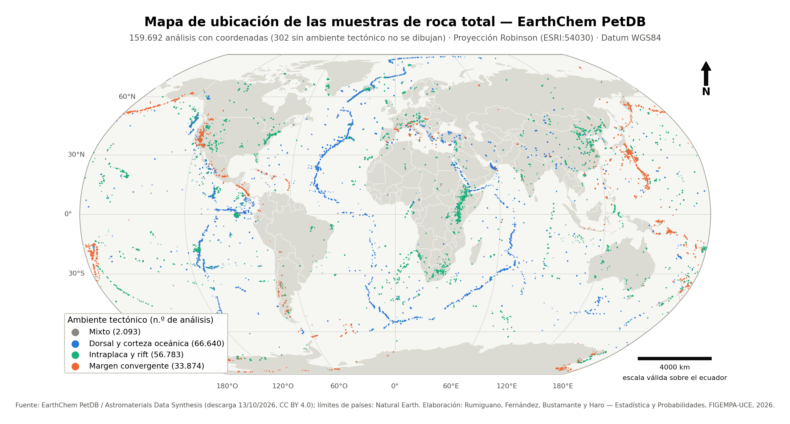

Introducción
La geoquímica de rocas estudia la composición química de los materiales que forman la corteza y el manto de la Tierra. Para la ingeniería en minas es una herramienta de todos los días: la concentración de elementos como el níquel, el cromo, el cobalto, el cobre o las tierras raras orienta la exploración de yacimientos, y la proporción de los elementos mayores permite clasificar las rocas y reconocer los procesos que las formaron.
Las rocas ultramáficas, por ejemplo, alojan depósitos de cromita y de níquel; los arcos volcánicos, como el de los Andes ecuatorianos, concentran pórfidos de cobre como Mirador y depósitos epitermales de oro como Fruta del Norte.
Durante casi un siglo, miles de investigaciones han analizado muestras de roca en todo el planeta, desde afloramientos en los continentes hasta testigos de perforación en el fondo del océano. La base de datos PetDB, parte de la infraestructura EarthChem, reúne esos resultados en un formato común. Este proyecto toma esa compilación como caso de estudio y le aplica, paso a paso, las herramientas de la asignatura: estadística descriptiva, inferencial, regresión y machine learning.

Planteamiento del problema

Cómo se distribuyen las concentraciones de los elementos mayores, traza y tierras raras en las rocas del planeta, en qué medida dependen del tipo de roca y del ambiente tectónico en que se formaron, y es posible predecir ese tipo o ese ambiente a partir de la composición química?
Pregunta de investigación
La información geoquímica existe, pero está dispersa en miles de publicaciones, fue producida con métodos de laboratorio distintos y rara vez se analiza en conjunto. Un ingeniero que evalúa una muestra necesita saber si su composición es "normal" para ese tipo de roca o si se aparta de lo esperado, y para eso hacen falta valores de referencia construidos con muchos datos.
Además, las concentraciones químicas no se comportan como una campana simétrica: suelen tener colas largas, valores atípicos y muchos datos faltantes, lo que obliga a elegir con cuidado los indicadores y los modelos. Buena parte de las muestras viene de los programas de perforación oceánica, lo que también sesga la base hacia las rocas del fondo marino.
Mapa de ubicación
Las muestras cubren todos los continentes y océanos; cerca de dos tercios vienen del fondo oceánico. El mapa se elaboró en QGIS y en Python (geopandas), con proyección Robinson y datum WGS84.



Objetivos
Aplicar métodos de estadística descriptiva, inferencial, regresión y machine learning a los análisis geoquímicos de roca total de EarthChem PetDB, para caracterizar la composición química de las rocas según su tipo y su ambiente tectónico y evaluar si esa composición permite predecirlos.
Describir
La distribución de los elementos mayores, traza y tierras raras mediante tablas de frecuencia, gráficas e indicadores de posición, dispersión y forma, por tipo de roca y ambiente tectónico.
Ver estadística descriptiva →Inferir
Ajustar modelos de probabilidad a las variables seleccionadas y estimar sus parámetros con intervalos de confianza, para extender a la población lo observado en la muestra.
PróximamenteRelacionar
Cuantificar la relación entre variables químicas, como la sílice frente a los álcalis o el magnesio frente al níquel, con regresión simple, no lineal y múltiple.
PróximamentePredecir
Entrenar y evaluar una red neuronal que clasifique el ambiente tectónico o el tipo de roca a partir de la composición química.
PróximamenteRecorrido del proyecto
Cada unidad del curso tiene su propia página, que se completa a medida que avanzan las lecciones.
Estadística descriptiva
Población y muestra, tabla de variables, tablas de frecuencia, gráficas, indicadores y tratamiento de outliers.
Datos y fuente
De dónde salieron los datos, cómo se limpiaron, reporte en PDF y descargas.
Equipo
Estudiantes de Ingeniería en Minas y docente de la asignatura.